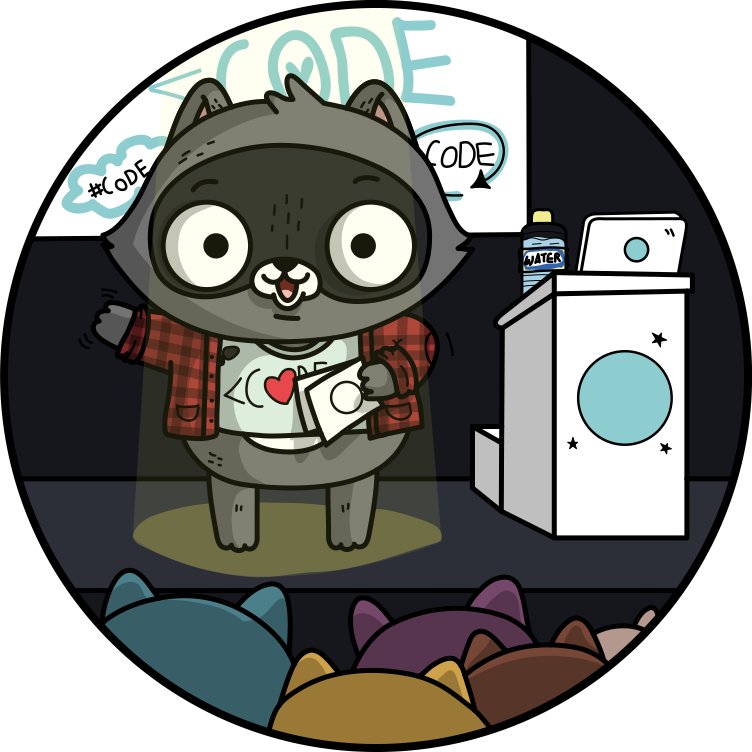

Python Web Apps:
Django
aka.ms/python-web-apps-django
Meet Pamela

Python Cloud Advocate at Microsoft
Formerly: UC Berkeley, Coursera, Khan Academy, Google
Find Pamela online at:
| Mastodon | @pamelafox@fosstodon.org |
| @pamelafox | |
| GitHub | www.github.com/pamelafox |
| Website | pamelafox.org |
Today's topics
- Django 101
- üë©üèæ‚Äçüíª Exercise #1: Django app
- Debugging Django
- More Django
- Productionizing Django
- Hosting Django
- üë©ü誂Äçüíª Exercise #2: Deploying Django
Exercise setup
To follow along with the exercises, your options are:
-
Online development with Codespaces:Repos we'll use:
- Local development with VS Code:
- Local development with any editor:
Django framework
Django, an external library, is an opinionated framework for server-side code. Includes an ORM for database interaction.
Apps written in Django:
- Eventbrite
- Coursera (originally, now Scala+Play)
- Pinterest (originally, now Flask)
Example: Django + PostgreSQL
github.com/Azure-Samples/azure-django-postgres-flexible-appservice
aka.ms/django-pgflex-app
Run DB migrations:
python3 src/manage.py migrate
Load seed data:
python3 src/manage.py loaddata src/seed_data.json
Run the server:
python3 src/manage.py runserver 8000
Django project structure
This app follows a typical Django project structure:
src/
manage.py
project/
__init__.py
asgi.py
settings.py
urls.py
wsgi.py
relecloud/
__init__.py
admin.py
apps.py
models.py
urls.py
views.py
templates/
The relecloud folder represents a Django "app".
We can add more "app"s to the project, each with its own models, views, urls, etc.
Django models
Models are Python classes that represent database tables.
from django.db import models
class Destination(models.Model):
name = models.CharField(unique=True, max_length=50, null=False, blank=False)
subtitle = models.CharField(unique=False, max_length=240, null=False, blank=True)
description = models.TextField(max_length=2000, null=False, blank=False)
üîó From models.py
To create a migration:
python3 src/manage.py makemigrations
To apply the migration:
python3 src/manage.py migrate
Django views
Views can be simple Python functions:
def index(request):
return render(request, "index.html")
Or subclasses of Django's generic views:
class CruiseDetailView(generic.DetailView):
template_name = "cruise_detail.html"
model = models.Cruise
üîó From views.py
Django templates
Templates are HTML files written in Django template language (Jinja2-like):
<p>This cruise visits the following destinations:</p>
{% for destination in cruise.destinations.all %}
<a class="list-group-item list-group-item-action" href="{% url 'destination_detail' destination.id %}">{{ destination }}</a>
{% endfor %}
üîó From templates/destination_detail.html
Django URLs
URLs map paths to views:
urlpatterns = [
path("", views.index, name="index"),
path("about", views.about, name="about"),
path("destinations/", views.destinations, name="destinations"),
path(
"destination/<int:pk>",
views.DestinationDetailView.as_view(),
name="destination_detail",
),
path("cruise/<int:pk>", views.CruiseDetailView.as_view(), name="cruise_detail"),
path("info_request", views.InfoRequestCreate.as_view(), name="info_request"),
]
üîó From urls.py
Django admin
Django includes a built-in admin interface for managing data.
admin.site.register(models.Cruise)
admin.site.register(models.Destination)
admin.site.register(models.InfoRequest)
üîó From admin.py
To log in to the admin interface:
- Create a superuser:
python3 src/manage.py createsuperuser - Restart the server and navigate to "/admin"
- Login with the superuser credentials.
Exercise: Django app
Using this repo:
github.com/Azure-Samples/azure-django-postgres-flexible-appservice
aka.ms/django-pgflex-app
- Follow the readme steps to get the app running.
- Inspect the local DB tables using SQLTools extension.
- Follow the readme steps to get into the Django admin.
- Add a new destination using the Django admin.
- Change the destinations route to sort destinations by name, using order_by.
Debugging in VS Code

Debugging Python code
.vscode/launch.json:
{
"version": "0.2.0",
"configurations": [{
"name": "Python: Django",
"type": "debugpy",
"request": "launch",
"program": "${workspaceFolder}/src/manage.py",
"args": [
"runserver"
],
"django": true,
"justMyCode": true
}]}
In settings.py:
DEBUG_PROPAGATE_EXCEPTIONS = env("DEBUG") # True locally
Debugging templates
Add to .vscode/launch.json:
{
"version": "0.2.0",
"configurations": [{
"name": "Python: Django",
"type": "debugpy",
"request": "launch",
"program": "${workspaceFolder}/src/manage.py",
"args": [
"runserver"
],
"django": true,
"justMyCode": true,
"jinja": true // Add this line
}]}
More Django

Django extensions
Django is designed to be extensible. Some popular extensions:
- Django REST framework for APIs
- Django Debug Toolbar for debugging
- Django Crispy Forms for form styling
- Django Allauth for authentication
- Django Storages for cloud storage
- Django Honeypot for spam prevention
üîó Read more: 20 Django Packages I Use in Every Project
Wagtail CMS
Wagtail is a popular CMS built on Django.
✨ Now with AI!
Wagtail AI adds AI-based helpers to form fields.
Wagtail Vector Index adds vector search to Wagtail.
Django + AI
Check out Paolo's talk on Django and Vector Search:

https://www.citusdata.com/posette/2024/schedule/#livestream4
Full-stack Django
Vue frontend plus Django-REST + Wagtail backend:

Productionizing
Django apps

Running Django app locally
Using the built-in Django server:
python3 -m src/manage.py runserver 8000
⚠️ But the dev server is not recommended for production use.
Running Django with gunicorn
Gunicorn is a production-level server that can run multiple worker processes.
Add gunicorn to requirements.txt:
gunicorn==22.0.0
Use gunicorn to run Django app with multiple workers:
python3 -m gunicorn project.wsgi --workers 4 --bind 0.0.0.0:8555
Configuring gunicorn
Gunicorn can be configured with a gunicorn.conf.py file:
import multiprocessing
max_requests = 1000
max_requests_jitter = 50
log_file = "-"
bind = "0.0.0.0:8000"
workers = (multiprocessing.cpu_count() * 2) + 1
threads = workers
timeout = 600
The run command can be simplified to:
python3 -m gunicorn project.wsgi
Hosting Django

Azure app hosting options
- How much control do you want?
- How much do you enjoy administering systems?
- Do you need it to scale up/out?
| Azure Container Apps | Azure Functions | |||
| Azure Kubernetes Service | Container Management | Azure App Service | Serverless | |
| Environment | Containers | PaaS | ||
| Cloud | Azure | |||
For Django, App Service is easiest way to get started.
Azure relational database options
Considerations:
- How much database storage do you need?
- How many database read/writes do you expect?
- Availability: Backup policy? Multiple replicas?
- Data sovereignty: where can your data be stored?
| Option | Description |
|---|---|
| Azure Database for PostgreSQL – Flexible Server | Microsoft's most recent PostgreSQL offering. Fully managed service with vertical scaling. |
| Azure Cosmos DB for PostgreSQL | Distributed database using PostgreSQL and the Citus extension. Can scale horizontally. |
| Azure SQL Database | Microsoft's managed service for SQL Server. Can be used in Django via microsoft/mssql-django |
Securely connecting App Service to PostgreSQL
⭐️ In production, use passwordless authentication for the database:
- Disable password authentication in PostgreSQL
- Set Microsoft Entra user as PostgreSQL admin
- Create a service principal for the App Service app and grant it access to the database
- Fetch a token as the app and use for the PostgreSQL connection password
- Re-fetch the token periodically to avoid expiration
⚠️ If you must use a password, store in Azure KeyVault.
See aka.ms/django-quiz-app
Storing the secret key
Django requires a secret key for security, defined in settings.py:
SECRET_KEY = os.environ.get("SECRET_KEY")
For production, store this in a secure location, such as Azure Key Vault. üîë
To fetch the secret value, use a key vault reference in environment variables:
SECRET_KEY: '@Microsoft.KeyVault(VaultName=${keyVaultName};SecretName=djangoSecretKey)'
(Also possible in Container App settings)
Serving static files
A few options for efficiently serving static files in production:
- Use Whitenoise
to serve static files directly from Django, with compression and cache headers.
As shown in aka.ms/django-quiz-app.
- Use Django Storages
to serve static files from cloud storage (like Azure Blob Storage).
As shown in tonybaloney/django-on-azure.
Both options could optionally be used with a CDN (Azure Front Door) in front.
Azure architure for Django + PostgreSQL
One possible architecture:
Exercise: Deploy Django + PG
Using this repo:
github.com/pamelafox/django-quiz-app
aka.ms/django-quiz-app
- Open in GitHub Codespaces or VS Code with Dev Containers extension
- Sign up for a free Azure account
- Follow the Deploying instructions in the README
- If it deploys successfully, visit the endpoint URL to confirm it's working.
- Run
azd downto un-deploy the app (so that you don't waste cloud resources unnecessarily).
Additional security considerations
=Restrict network access:
- ⭐️ Put the database and app in the same virtual network
See https://aka.ms/django-restaurants - If you can't use a VNet, use a firewall to restrict access to the database
See aka.ms/django-pgflex-app
⚠️ The firewall still allows access from other Azure-hosted apps.
Make it harder to access admin:
- Customize the admin URL
ADMIN_URL = os.environ.get("ADMIN_URL") - Use adjango-admin-honeypot to detect unauthorized access
Django on Azure templates
- All variants of the space tourism app:
- + Storage: github.com/tonybaloney/django-on-azure
- + VNet: github.com/Azure-samples/msdocs-django-postgresql-sample-app
- + Redis: github.com/pamelafox/cookiecutter-django-azure
Also check out the Django tutorial.
More Azure resources

Any questions?